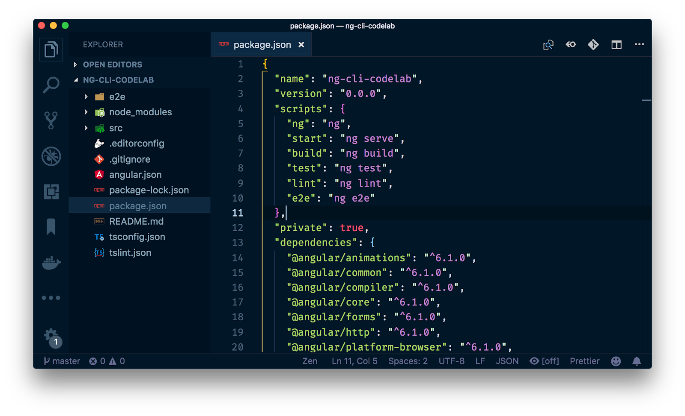
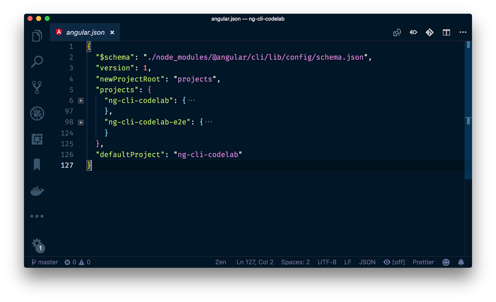
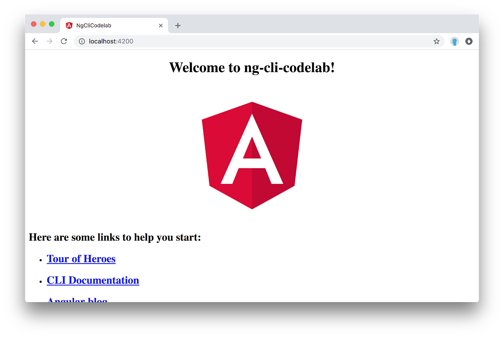
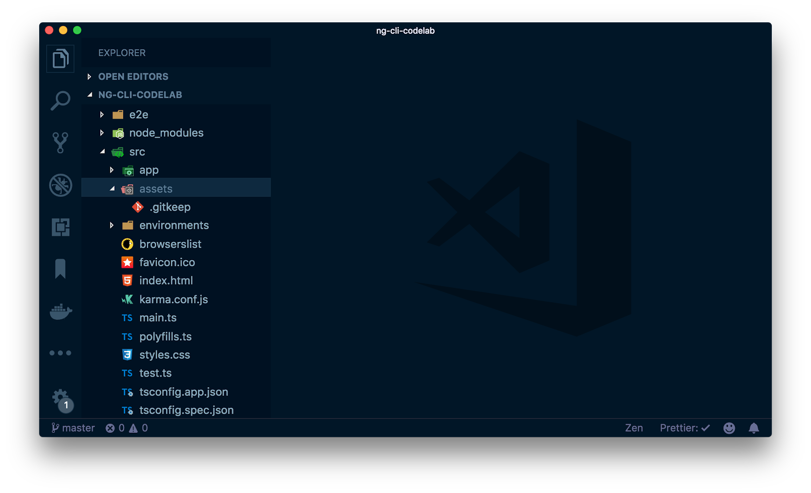
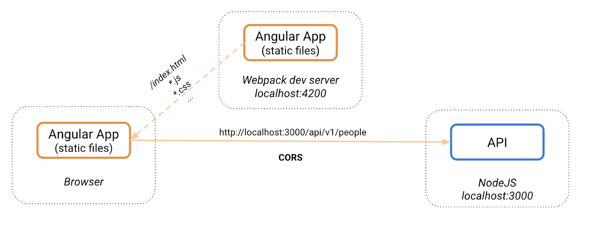

The Angular CLI is a command line interface developed by the Angular team at Google as well as Open Source contributors to improve the overall developer experience when working with Angular applications. It is the top choice for Angular developers to generate, serve the app during development and create production bundles for their apps.
What is the Angular CLI
The Angular CLI is a command line interface, currently based on top of Webpack. It allows you to
- Generate a new project setup - It allows to scaffold a new project, generating the initial project structure and build setup (for TypeScript, bundling, code splitting, lazy loading, compression).
- Serve your project - During development you can serve your project via the Angular CLI's integrated web development server.
- Generate new artifacts as you develop - As you develop your project you can create new services, directives, modules, components etc. using the Angular CLI. Using this approach guarantees you're compliant with the official Angular Styleguide.
- Test your project - The initially generate project setup already comes with a fully working Karma + Jasmine test setup. As you generate new components, services etc., Jasmine spec files will be created along the way, that can be executed using dedicated commands provided by the CLI.
This codelab will walk you through creating a new Angular project using the Angular CLI, through scaffolding various artifacts such as services, components etc and explore the various configuration options that help you customize the process to your own.
What you'll learn
- How to generate a new Angular project from scratch
- How to generate new modules, services, components,...
- How to leverage the various CLI flags to control the generated code
- How to run Angular unit tests (using various options)
- How to build a project, ready to be deployed for production
What you'll need
- The latest version of Node.js and NPM (comes with Node)
- A Code editor (ideally Visual Studio Code)
In order to get started we need to install the Angular CLI. We have different possibilities. Either install it globally, using
$ npm install -g @angular/cli...or use npx which should come pre-installed with npm. Npx is a package runner, basically installing an npm package temporarily and executing its main binary executable.
To generate a new project, we can use the "new" command.
$ ng new <the-project-name>Or if you want to use npx, simply type
$ npx @angular/cli new <the-project-name>The advantage of using npx is that we don't have to install any global dependency. All following commands will be executed with the local installation of the Angular CLI that lives inside the generated project.

The Angular CLI should have generated a new folder using the name of the project you provided. Open the project in your favorite code editor (ideally VSCode). You should see a structure similar to the following:

Note, in the package.json we have a series of scripts for starting, building, testing and linting our Angular project. All these commands are scoped to the local Angular CLI version, so there is no need to have a global installation other than for generating the initial project scaffold.
The angular.json
An important file is the angular.json file that resides at the root of our Angular project. It contains the meta information of all projects living in the generated "project workspace"

Each project usually has an architect section, which among potentially other build steps, describes how to build, serve, test and lint the given project.
Take some time to go through the configuration and try to understand it by their corresponding names.
In order to start the project, execute
$ npm run startYou could also simply execute npm start. start and test are special aliases. The start command is mapped to the ng serve command in the npm scripts section of the package.json.
ng serve launches the Angular CLI development server (a wrapper around the Webpack development server).

Once the compilation process finishes, go to http://localhost:4200 and you should see your application running.

Note that the CLI dev server is in watch mode. Each time you change some file, the app will be recompiled and the browser refreshed.
One of the most useful features of the CLI (besides the whole compilation setup) is the ability to scaffold new items for us. We can generate various things and the entire process of code scaffolding and manipulation, called schematics, is even extensible by 3rd party authors.
Let's take a look at a couple of important ones.
Generate a new module
Try generating a new module with the following command
$ ng generate module <the-module-name>Use the --dry-run option
If you're not sure about whether the outcome is the desired one, you can append the --dry-run or -d flag to each of the commands to perform a "dry run".
$ ng generate module <the-module-name> -dGenerate a new module with routing
Automatically add routing configuration to a new module by appending the --routing flag. Also not that we can use the "g" (for generate) and "m" (for module) shorthands.
$ ng g m <the-module-name> --routingGenerate a new component
To generate a new component, use
$ ng generate component <the-component-name>Also try generating a component under an existing module or folder. For instance:
$ ng g m people
$ ng g c people/people-listThese commands should generate a new people module, containing a people-list component that is registered on the people.module.ts file automatically.
Generate components without test files
Generate a component without test files by appending the --spec false flag.
$ ng g c <the-component-name> --spec falseGenerate components with inlined template and styles
Generate a new component with inlined template (using -t) and/or inlined styles (-s).
$ ng g c <the-component-name> -t -sNote, with inlined styles, it is not possible to have CSS preprocessors such as SCSS compilation. That will only work if styles are in a separate file.
Generate components with a flat structure
When generating components, they are placed by default into their own folder. Most of the time this is the desired behavior, also because they immediately come with a spec, html and css file, other than the actual TypeScript code file. However, if we create a very simple component, with no spec and inlined template and styles, we may prefer a flat folder structure. We can enforce this using the --flat option.
$ ng g c <the-component-name> -t -s --flat --spec falseAssets are simply static files that should be made available to the app at runtime and which should also be copied into the final production bundle of our applications. These might be images, JavaScript files,... The Angular CLI already generates an assets folder under src/assets.

You can create additional subfolders within assets. Try creating a person.json with some valid JSON content. Then open your browser at http://localhost:4200/assets/person.json and you should see the file being served by the Angular dev server.
The Angular CLI supports sass/scss, less and stylus as CSS preprocessors. You can either generate the project already with some configuration, like
$ ng new <project-name> --style=scss...or set it on an existing project via the following command
$ ng config schematics.@schematics/angular:component.styleext scssNote that on an existing project you have to change the global styles.css to have the proper styles.scss file ending, as well as in the angular.json the reference to the styles.scss has to be adjusted.
When serving our project with the Angular CLI development server, the app runs at port 4200 (unless we change it with the --port option). Our API backend server however, might run on another port, say localhost:3000. Hence, our http calls would have to specify the full path localhost:3000/api/people which results in CORS requests.

Unless that's the desired final scenario, we'd like to have a setup, where we can simply issue our HTTP calls against /api/people and that those API calls will automatically be proxied to the correct API server.

To configure such proxy, we create a proxy.conf.json at the root of our Angular project with the following content.
{
"/api/*": {
"target": "http://localhost:3000",
"secure": false,
"logLevel": "debug"
}
}Then, our "serve" script needs to be adjusted, also passing in the --proxy-config option.
{
...
"scripts": {
"start": "ng serve --proxy-config proxy.config.json",
...
},
...
}Execute npm start and you should see an according message in the console about the active proxy.
Unit tests are already pre-configured and set up with Karma and Jasmine. The according test files are specified with the *.spec.ts ending and are defined along side the files they are testing (such as components, services,..). To execute the application's unit tests, simply run
$ npm testThis will start Karma (using the karma.conf.js file), open Chrome and execute all Jasmine unit tests.
Try it by yourself.
While developing our application, we can use the Angular CLI dev server using the ng serve command. The entire compilation process however happens in memory and no files are written to disk. The moment we want to deploy our app to production, we need to compile the TypeScript files to an optimized JavaScript bundle that can be executed by the browser.
The default ng build command will do this for us, however it is not optimized for production use. To do so, add the --prod flag.
$ ng build --prodIt is good practice to create an npm script for that.
{
"name": "ng-cli-codelab",
"version": "0.0.0",
"scripts": {
"ng": "ng",
"start": "ng serve",
"build": "ng build",
"build:prod": "ng build --prod",
...
},
...
}After the build process succeeds, we should have a dist folder with the optimized output files that can be copied to our production web server.
You did it!! Quickly go through these questions to check your knowledge. You should be able to answer most of these by now.
Check your knowledge
- How do we generate a new application?
- How do we generate new modules?
- How do we generate new components?
- How do we generate new services?
- What kind of flag can be appended to Angular CLI commands to just perform a test run of its effect?
- What is a dev server proxy and how do we configure it for our API calls?
- Explore further use cases on the Angular CLI Wiki